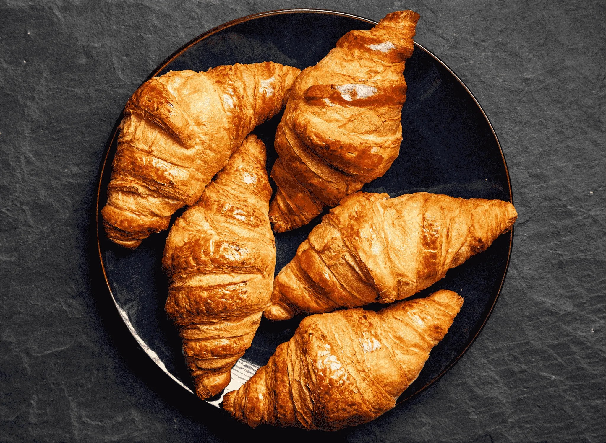
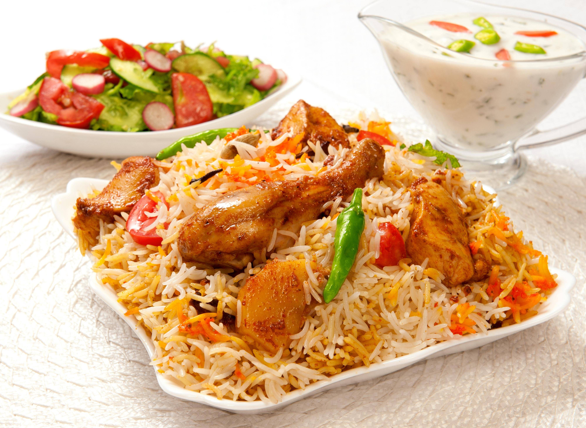
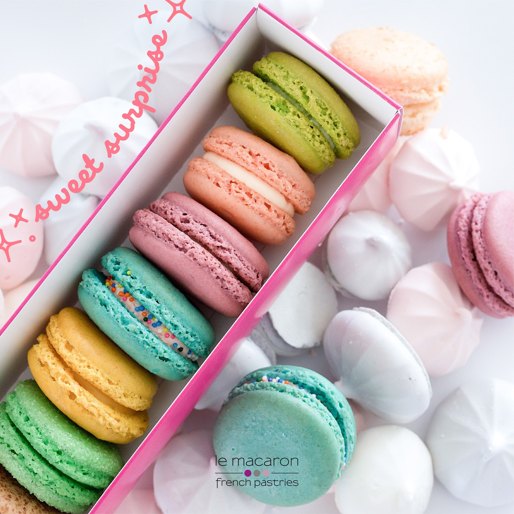

Delicious Restaurant Menu
Welcome to our restaurent! Choose your favourite dish from our menu below
| Appetizers | |||||||
|---|---|---|---|---|---|---|---|
 |
Butter Crossiant A classic French pastry with a golden, crisp exterior and a soft, light, and airy interior. Made with quality butter for a rich, authentic flavor. $5.99 Order Now |
||||||
 |
Corn Soup The dominant flavor is the natural sweetness of the corn, which can be balanced with savory elements like onions, garlic, and various herbs and spices. $3.99 Order Now |
||||||
| Main Course | |||||
|---|---|---|---|---|---|
 |
Biryani Known for its spicy, rich flavor and generous use of mint and fried onions. It is often made with goat meat and cooked using the kachchi style. 14.99 Order Now |
||||
 |
Steak with Rice Steak with rice can be prepared in many delicious styles, ranging from a simple pairing of seared steak with plain rice to flavorful, all-in-one dishes like pepper steak and rice or steak fajita bowls. 15.99 Order Now |
||||
| Desserts | |||||
|---|---|---|---|---|---|
 |
Brownie with Icecream A classic brownie with ice cream (often called a brownie sundae) is a popular and delicious dessert that combines warm, rich chocolate brownie with cold, creamy ice cream. 5.99 Order Now |
||||
 |
Macarons Macarons are typically brightly colored and feature a variety of fillings, such as buttercream, ganache, or jam. 6.99 Order Now |
||||